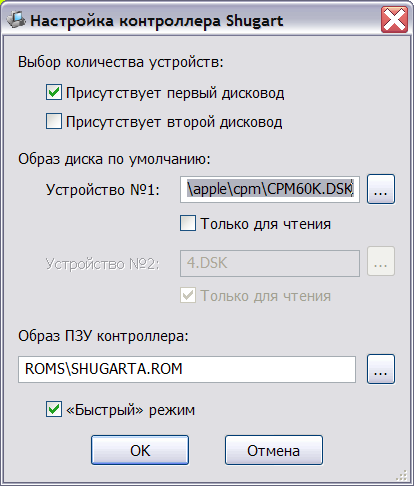
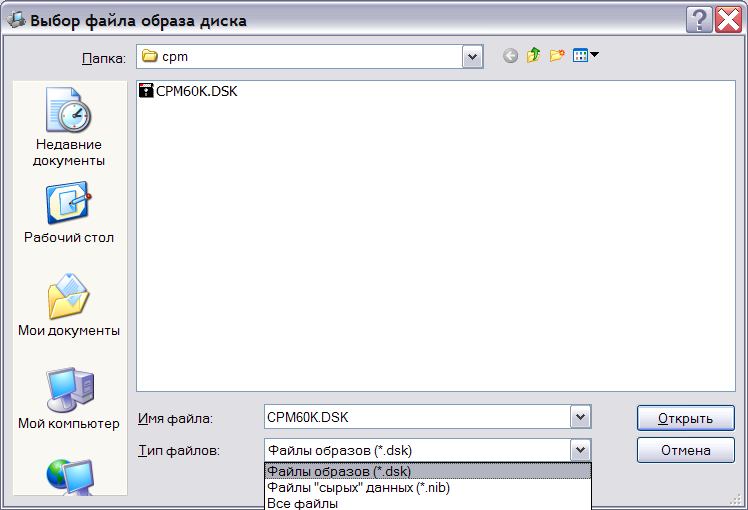
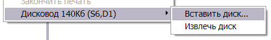

Контроллер дисковода поддерживает один или два привода типа Shugart (140K).
Наличие или отсутствие дисководов задаётся в окне конфигурации контроллера:

Также в окне конфигурации может быть заданы имена файлов с образами дисков, загружаемые при запуске системы, режим "только для чтения" для каждого из дисководов и имя файла ПЗУ контроллера (256 байт).
Переключатель "Быстрый" режим включает режим ускорения эмулируемого процессора при доступе к дисководу, что позволяет значительно сократить время загрузки данных.
При выборе файла образа диска имеется возможность указания файлов типа .dsk (посекторные данные DOS), и файлов типа .nib ("сырые" данные диска):

При запуске системы, каждый дисковод добавляет подменю в контекстное меню системы:

Используя это подменю, можно сменить текущий образ диска, либо "извлечь" диск из дисковода.
Однако, в отличие от настроек системы, смена диска через контекстное меню не сохраняется для последующего запуска.
См. также: Контроллер дисковода Teac, Изменение конфигурации, Описание и настройка устройств, Главное меню